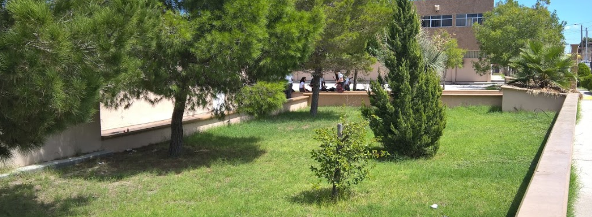
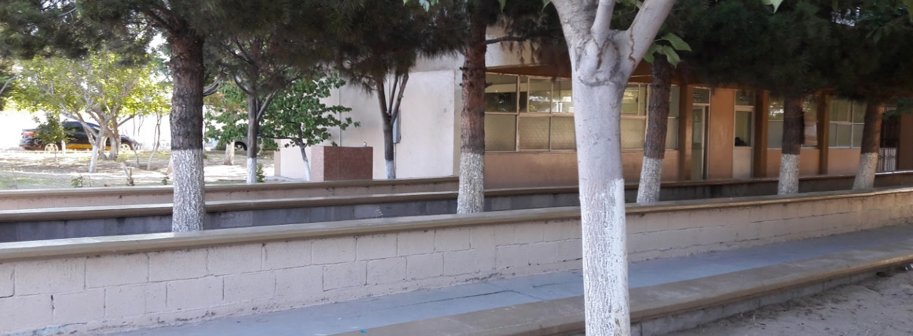

- 

- 


El Bachillerato Tecnológico tiene como objetivo fomentar una educación integral, contribuyendo a la articulación y flexibilidad del sistema educativo, acorde con los intereses de los estudiantes y las necesidades de desarrollo del país, la Secretaría de Educación Pública a través de la Subsecretaría de Educación e Investigación Tecnológicas, con pleno respeto al federalismo educativo. Esta modalidad es bivalente, ya que se puede estudiar el bachillerato al mismo tiempo que una carrera de técnico, las materias propedéuticas que se cursan son prácticamente las mismas que en el bachillerato general, por lo que se prepara para estudiar una carrera profesional del nivel superior, adicionalmente, el plan de estudios incluye materias tecnológicas que se cursan junto con las antes mencionadas y que preparan como técnico del nivel medio superior al estudiante en las diversas carreras que ofrece ésta modalidad de bachillerato. La nueva estructura curricular, que propone un modelo centrado en el aprendizaje sustentado en el constructivos, incluye tres componentes básicos: Formación Básica, Formación Profesional y Formación Propedéutica, y se imparte en la modalidad escolarizada. Su estructura curricular presenta las horas-semana mínimas requeridas y está organizada en seis semestres, integrados por módulos y asignaturas. El Componente de Formación Profesional se articula con la educación superior y asimismo permite la incorporación al sector productivo. Se organiza en carreras estructuradas en módulos para desarrollar las competencias profesiónales correspondientes. Los módulos de la formación profesional son autocontenidos y están enfocados en el desarrollo de habilidades específicas para el trabajo, con una orientación predominantemente práctica. Al concluir cada módulo los estudiantes reciben un certificado. Estos certificados se plantean como "salidas laterales", que permiten que los estudiantes tengan reconocimiento por sus estudios incluso si no cursan tres años completos de EMS. Cuando se concluyen los 3 años de estudio, se puede ingresar a la educación superior en instituciones universitarias, politeacute;cnicas o tecnológicas. Al concluir los estudios obtienes el certificado de bachillerato y una carta de pasante; Una vez cubiertos los requisitos correspondientes, el regresado obtiene el título y la cédula profesional de la carrera cursada, registrados ante la Dirección General de Profesiones de la Secretaría de Educación Pública.
La carrera de Técnico en Electrónica ofrece las competencias profesionales que permiten al estudiante aplicar dispositivos y sistemas electrónicos compactos y eficientes, que están presentes en todos los ámbitos del ser humano, requiere de técnicos en electrónica para operar, poner en marcha y mantener toda la diversidad de sistemas electrónicos existentes de uso doméstico, comercial e industrial.
La carrera que aquí se describe, Técnico en Gericultura, proporciona las herramientas necesarias para que el alumno adquiera conocimientos, desarrolle habilidades y destrezas; asuma un actitud responsable para ejercer profesionalmente en el ámbito de la salud (Geriatría), demostrando que tiene capacidad para ejecutar en el anciano sano ó enfermo, programas específicos para su cuidado integral; todo ello bajo la reglamentación, estándares, normas y especificaciones que reclama el ámbito laboral en cuestión.
La carrera de Técnico en Administración de Recursos Humanos se desarrolla como vertiente de la carrera de Administración y ofrece las competencias profesionales que permiten al estudiante elaborar y gestionar documentación administrativa referente a recursos humanos, integrar al personal a la organización, asistir en actividades de capacitación, desarrollo y evaluación del personal, así como determinar las remuneraciones al personal.
La carrera de Técnico en Programación ofrece las competencias profesionales que permiten al estudiante realizar actividades dirigidas a: analizar, diseñar, desarrollar, instalar y mantener software de aplicación tomando como base los requerimientos del usuario.
La carrera de Técnico en Soporte y Mantenimiento de Equipo de Cómputo se desarrolla como vertiente de la carrera de Informática y ofrece las competencias profesionales que permiten al estudiante realizar operaciones de soporte y mantenimiento a equipos de cómputo de manera presencial y a distancia, tomando como base las especificaciones del fabricante e instalar redes LAN de acuerdo a las necesidades de la organización.
La carrera de Laboratorista Químico ofrece las competencias profesionales que permiten al estudiante asistir en las operaciones básicas de laboratorio ejecutando métodos de análisis cualitativos, cuantitativos, físico-químicos, y microbiológicos a diversas muestras con base a normas y procesos estandarizados.
La carrera de Técnico en Refrigeración y Climatización dado el avance tecnológico para el confort de los espacios donde se utiliza aire acondicionado, calefacción y ventilación surge como un concepto integrador puesto que ofrece las competencias profesionales que permiten al estudiante realizar tareas de instalación, reconversión, actualización y de mantenimiento a sistemas de refrigeración y aire acondicionado, cámaras frigoríficas, sistemas de enfriamiento de aire y agua, unidades centrales de aire acondicionado.
Aparte de cursar tus estudios de Bachillerato de Nivel Medio Superior, el Cbtis 128 te ofrece la opción de Titularte cómo Técnico en la especialidad que oferta el plantel, aquí encontrarás las diferentes opciones de Titulación, Requisitos y Documentación, así cómo la información de los títulos que se encuentran en trámite en por medio de la oficina de Servicio Social y Titulación.
El alumno podrá optar Titularse por alguna de las siguientes opciones, cumpliendo los Requisitos y Documentación correspondiente:
Cuando el alumno acredite todas las asignaturas con calificaciones de 6 ó superiores y tenga en los cinco módulos de la carrera con dictamen de competente (éste se logra obteniendo un promedio de 8 en cada módulo)
Cuando demuestre como mínimo en un año de Experiencia laboral a través de la memoria correspondiente y la constancia de la empresa donde se desempeñó profesionalmente, siempre y cuando la memoria refiera a las aplicaciones en el trabajo con los conocimientos y competencias adquiridas en la carrera.
El alumno desarrollará un proyecto innovador y a través de la memoria correspondiente siempre y cuando ésta se refiera a las aplicaciones en el trabajo de los conocimientos y competencias adquiridas en la carrera. Para iniciar el prodecimiento de Titulación, el alumno deberá cumplir los siguientes requisitos: